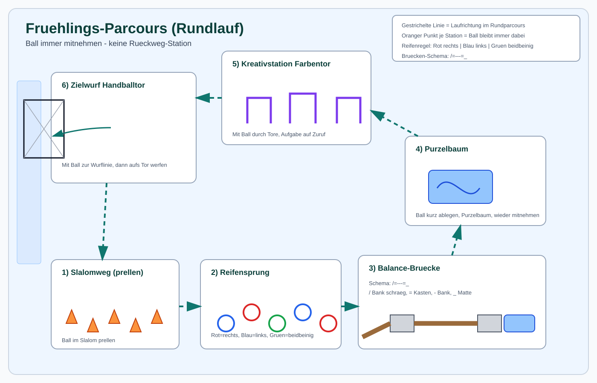

Training vom 21.04.2026 – Frühling
Ziele
- Viele Ballkontakte in hoher Bewegung sammeln
- Sicheres Werfen und Fangen unter kleinen Aufgaben festigen
- Orientierung, Umschalten und Zusammenspiel spielerisch fördern
- Mit einer klaren Story und schnellen Wechseln für hohe Motivation sorgen
Aufbau (60 Minuten)
Einstieg (3 Min)
Aufwärmen (12 Min)
Farbenjagd mit Ball
- Dauer: 12 Minuten
- Material: 1 Ball pro Kind, 4–6 verschiedenfarbige Hütchen oder Leibcheninseln
- Aufbau: In der Halle liegen farbige Inseln verteilt. Jedes Kind hat einen Ball und bewegt sich frei dazwischen.
- Durchführung: Die Kinder dribbeln, tragen oder rollen ihren Ball durch die Halle. Auf Zuruf einer Farbe laufen alle schnell zur passenden Insel und lösen dort eine Mini-Aufgabe.
- Beispiel-Aufgaben:
- Gelb: 3x Ball hochwerfen und fangen
- Grün: 5x Prellen auf der Stelle
- Rot: 1x Knie mit dem Ball berühren, dann schnell weiter
- Blau: Mit einem Partner 3 schnelle Pässe
- Steigerung: Fortbewegung wechseln: rückwärts laufen, seitlich laufen, Hopserlauf, Ball nur mit der schwachen Hand tragen.
- Fokus: Reaktion, Ballgewöhnung, Orientierung im Raum
Hauptteil (36 Min)
Übung 1: Frühlings-Parcours (24 Min)
- Material: 8–10 Hütchen, 4–6 Reifen, 3 kleine Kästen, 2 Bänke, 2 blaue Matten, 2–4 Stangen mit Hütchen als Farbentor, 1 Handballtor (linke kurze Hallenseite), Handbälle Größe 0/1
- Aufbau: Ein geschlossener Rund-Parcours für alle Kinder. Es gibt keinen Rückweg – die Kinder laufen immer weiter zur nächsten Station.
- Wichtig: Der Ball bleibt bei jeder Station immer dabei (tragen, rollen, prellen oder kurz sichern).
- Stationen:
- Slalomweg: 5 Hütchen in leichter Wellenlinie. Die Kinder prellen den Ball durch den Slalom (bei Bedarf kurz sichern und weiterprellen). Ziel: Ballkontrolle in Kurven.
- Reifensprung: 4–6 farbige Reifen hintereinander. Rot = rechter Fuß, Blau = linker Fuß, Grün = beidbeinig. Ziel: Rhythmus und Beinkoordination.
- Balance-Brücke: Über die Bank hochlaufen. Über Kasten und Bank. Abschluss: kontrollierte Landung beidbeinig auf der Matte.
- Purzelbaum-Station: Mit Ball am Bauch in die Hocke gehen, Ball kurz neben die Matte legen, einen Purzelbaum machen, Ball sofort wieder aufnehmen und weiterlaufen. Für unsichere Kinder alternativ eine seitliche Rolle.
- Kreativ-Station „Farbentor": Durch 2–3 Farbentore (Stangen mit Hütchen) mit Ball in der Hand laufen. Bei jedem Tor ruft die Trainerin oder der Trainer eine Aufgabe: „Drehung", „Knie hoch", „Ball einmal prellen" oder „Ball um den Bauch kreisen".
- Zielwurf am Handballtor: Kind läuft mit Ball zur Wurflinie auf der linken kurzen Hallenseite und wirft auf das Handballtor. Danach Ball sichern und direkt wieder zu Station 1 einreihen.
- Organisation: Pro Station 1 deutlich sichtbares Start-Hütchen. Start immer nur auf Signal, damit die Kinder Abstand halten.
- Durchführung: 3 Runden mit kurzem Wechselsignal nach je 7–8 Minuten.
- Runde 1: Einfach laufen, rollen, werfen (Ankommen und Sicherheit).
- Runde 2: Mit mehr Tempo, zusätzlich an zwei Stellen kurz prellen.
- Runde 3: Partnerweise: Ein Kind durchläuft den Parcours, am Ende kurzer Pass zum Partner als Startsignal.
- Fokus: Koordination, Ballgefühl, Zielwerfen und Rhythmus ohne komplexe Regeln

Übung 2: Insel-Handball (12 Min)
- Material: 2 Matten oder Reifen als Inseln, Leibchen, Handbälle, Hütchen zur Feldbegrenzung
- Aufbau: Kleines Spielfeld, an jeder Grundlinie liegt eine Insel. Optional 2 Felder nebeneinander aufbauen.
- Spielidee: Ein Punkt zählt, wenn ein Kind auf der eigenen Angriffsinsel einen Pass fängt. Kein Sprung auf eine besetzte Insel – die Kinder müssen daher freilaufen und rechtzeitig passen.
- Regeln:
- Maximal 3 Schritte mit Ball
- Kein Körperkontakt – Ballgewinne nur durch geschicktes Abfangen
- Nach jedem Punkt sofort neuer Start von der Mitte
- Nach 4–5 Minuten Teams mischen
- Fokus: Freilaufen, Sehen, Passen unter Spieltempo, Abschluss mit Erfolgserlebnissen
Abschluss (9 Min)
Hühner auf der Stange
- Dauer: 9 Minuten
- Material: 1–2 Langbänke als „Stange", Softbälle, Leibchen
- Beschreibung: Zwei Teams spielen wie Völkerball. Wer getroffen wird, geht auf die Bank („Stange"). Fängt ein Teammitglied den Ball, darf ein Kind von der Stange zurück ins Feld.
- Regeln: Nur weiche Würfe, keine Kopftreffer, fairer Abstand zur Bank.
Trainerhinweise
- Möglichst schnell vom Aufwärmen in den Hauptteil wechseln: Parcours vor Trainingsbeginn komplett aufbauen.
- Bei unruhiger Gruppe die Bahnen kürzer halten und lieber häufiger wechseln als zu lange erklären.
- Für jüngere Kinder Zielabstände deutlich verkürzen und mehr Fänge statt harter Würfe einbauen.
- Wenn viele Kinder da sind, Insel-Handball auf 2 Feldern parallel spielen.